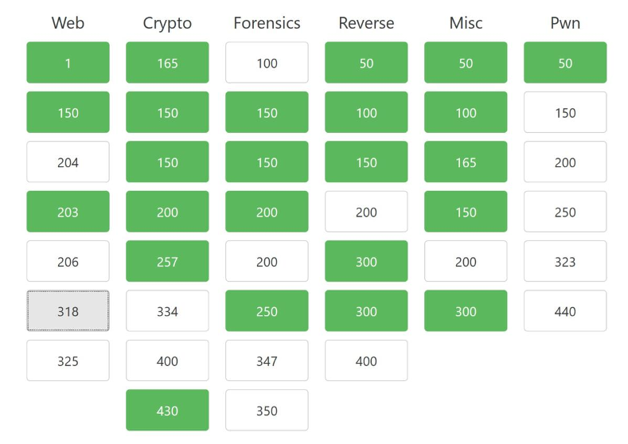

Tips and Tactics for Creating your own Capture-the-Flag Event
Is your security awareness training program effective and making a difference? Does it fully engage your staff? What about your technical employees, such as developers and engineers? Do they view the accompanying slideshow training as a chore? One way to better motivate and engage employees in training is through gamification.
According to a recent survey, 79% of security awareness training participants indicate they would be more productive and motivated if their learning environment was more like a game. Successful cybersecurity training can be gamified in a number of ways, but I will focus this blog post on hosting your own capture-the-flag (CTF) event.
Instead of relying on perimeter defenses such as WAFs to protect their applications in runtime, organizations need to embrace self-protecting applications with attack defenses embedded deep inside actual application runtimes. This new, state-of-the-art AppSec approach is more effective than perimeter defenses at detecting and blocking attacks, simply because of where the actual protection is located (inside the actual application runtime).
What Is a CTF event?
A CTF event is a competition that takes major disciplines of information security and makes them into smaller, objectively measurable exercises. Participants attempt to solve challenges by solving, exploiting, breaking, or other cybersecurity tradecraft. There are two major types of CTFs: jeopardy and attack defend.
In a jeopardy-style CTF event, participants are presented a board filled with categories and challenges of varying point levels. As challenges are solved, the team earns points associated with each challenge and moves up the leaderboard accordingly. Ties are often broken by whichever team first achieved the score. Jeopardy CTF contests are the most common form of cybersecurity competition today.
Attack defend CTF events are quite different in structure. Each team is scored based on the amount of time they keep services up and running throughout the event. Meanwhile, each team can also attack other teams’ services, which are often intentionally vulnerable in myriad ways.
From an educational standpoint, especially from the lens of developers, I believe the jeopardy-style CTF is best. Here, each participant is focused on challenging themselves, not their competitors. Thus, for the purposes of this post, I will address jeopardy-style CTFs only.
Creating the CTF Event
Having previously created or assisted in organizing dozens of CTF events, I consider myself to be adept at what it takes to host an effective event. CTF contests can help train participants by teaching them to think like a bad actor. The premise is that people retain the most knowledge by doing rather than listening. As a result, when competitors approach challenges with malicious intent, they are much more aware of what they need to consider in their own applications.
Know Your Audience
In order to create a successful CTF event, the first question you must ask yourself is who is your audience? For example, if your audience are neophytes, you may want to limit the scope of the contest and focus on fundamentals. Similarly, if your audience is comprised of InfoSec professionals, you need to ensure challenges are up to date and that you have a wide range of categories.
Selecting CTF Categories
Choosing categories for your audience can help focus your scope. Common CTF categories are listed below, along with a non-exhaustive description.
| Category | Description |
|---|---|
| Web | These types of challenges utilize websites and typically include OWASP Top 10 vulnerabilities and/or misconfigurations. Often, these have a low barrier of entry, as almost everyone has used websites before and the easier vulnerabilities are highly publicized. |
| Forensics | Forensics challenges cover a wide range of challenges. Sometimes, this involves reconnaissance work, steganography, malformed files, and even packet captures if a networking category does not exist. Often, when there is not enough for a full forensics category, it can be made into a miscellaneous category with other challenge fillers. Again, low barrier of entry is important since there are a lot of open-source forensics tools to utilize. |
| Miscellaneous | Miscellaneous is exactly what it sounds like: It is a place to put challenges in instances where there are not enough for an entire category. However, it is also a great place for a couple of non-technical challenges, which helps ensure that the CTF event is beginner friendly. For competitors who might be a bit overwhelmed, some trivia or reconnaissance work can be helpful in the miscellaneous category. |
| Cryptography | This category involves higher levels of mathematics. Cryptography is a great category, as contestants use forms of cryptography in the professional lives every day, and they often do not even think about it. The barrier for entry is higher here since not everyone has experience with the levels of math required to complete cryptography challenges. That said, you can certainly make some easier ciphers like a Caesar cipher or another substitution cipher. |
| Networking | This category is relatively specific and occasionally gets rolled into the forensics and/or miscellaneous categories. It encompasses all disciplines of network engineering and commonly utilizes and hides flags inside of large packet captures. |
| Reversing | Reverse engineering is one of the more difficult categories to approach without any real experience. A typical CTF challenge is a binary that has a method to return a flag buried in the code. Participants must parse through the binary and reverse engineer it until they can figure out how to call or form the flag from the binary’s code. |
| Pwn / Exploit | Pwn or exploitation categories involve the misuse or breaking of something for complete access control of the challenge. These challenges are actually more accurate than some of the other categories and most closely resemble Black Hat hacking. A common challenge in this category would be a buffer overflow exploit in which the user must overwrite code to a certain address. |
Pick a Theme
This might sound unimportant, but CTF contests are definitely enhanced when the challenges circle around a theme. Theming the CTF event makes each challenge a fun story that includes a goal. This is vital because good CTF challenges tell a story. They give the participant a reason to attack a challenge, and they give a way for the challenge creator to give away hints if they want to do so. At bare minimum, they have the option to point contestants in the proper direction (more on this topic below).
Some popular themes in CTF events where I have been involved classic movies, like Jurassic Park or Back to the Future. However, I’ve also been a part of CTFs with wider-scoped themes, like Retro Video Games or Western CTF. In each of these themes, the challenge creator can create a story around a hero (the participant) and a bad actor (Nedry, Biff, Bowser, Outlaws).
Choose the CTF Event Framework
The next two topics go hand in hand. As the CTF creator, you must ensure that the CTF framework you choose can handle the challenges you intend to write. I don’t mean handle the load. But rather, as an example, if you intend to have coding challenges, you will likely need to create some sort of custom scoring system. Or, if you want to have challenges where participants can literally own the box, you’ll need a framework that can spin up user-isolated containers to ensure competitors don’t delete flags or mess with boxes.
Some potential CTF frameworks that I’ve used in the past include:
-
Full disclosure: This is a framework that a couple of friends and I wrote. It’s open source and the documentation is a little lacking right now, but it’s a scalable, user-isolated framework.
-
This is the most popular CTF framework right now. (I competed in three CTFs recently that used this framework.) Also, it is open source, requiring a fair amount of configuration and lacking the ability to employ user-isolated challenges.
Write the Challenges
Writing challenges is definitely the most difficult part of creating a CTF contest. Oftentimes, I bookmark articles I read throughout the year as potential inspiration for challenges. If you can, try to get several people to assist in creating challenges—diversity for challenge sets is great, plus you’ll get done faster with the additional help!
When creating a challenge, I like to tell a story with the theme. Am I trying to log in to this website as an administrator? Am I searching for a flag hidden inside a photo? These types of questions can be answered with a good story that matches the theme.
Additionally, sometimes I like to sneak hints into titles or descriptions of the challenges, especially on the easier point values. For example, a challenge may talk about a user and their financial PATH. That would seem to indicate a path traversal vulnerability, and it would be a good hint for someone who is still a beginner at CTF contests.
Stories and hints are fun, but the most important thing to keep in mind when writing a challenge is to make sure it’s logical and sane. The best way to do this is to have another challenge creator solve it with you. They can give you honest feedback about your challenge.
You will get complaints if you release challenges that are deemed guesswork. I’ve seen plenty of challenges like this before (e.g., contestants needing to open a binary in a particular reverse engineering tool and scrolling out the control flow graph until it spells out a flag). Or where you get a latitude and longitude and must go to street view and scroll around until you find a sign, take the name of the sign, and MD5 it to get a flag. You can understand how these challenges would be difficult to solve, especially if you were using the wrong debugging program or the town name instead of a sign’s name.
In addition to the above, I encourage you to keep a spreadsheet or repository to track challenges as they are created so you know what remains to be completed and if any categories need more challenges (viz., look “light”). Another professional tip: Have each creator write a solution to their challenge and commit it as well. Not every challenge creator will be available throughout the entirety of the CTF contest, so it will be good to help other creators answer questions about your challenges. Plus, if you’re so inclined, you can release the solutions after the CTF event.
Test the Challenges
Now that you’ve written all your challenges, you need to test each one to ensure everything is working properly and your team is comfortable with every challenge being released. The best way to do this is to stand up a working copy of the CTF contest in the environment you plan on running it in (e.g., AWS, Azure, etc.). That way you can solve each challenge and test the flags to be sure they’re written down correctly.
Host the CTF Event
Now that you and your team have written all of the challenges, it is time for the best part: hosting the CTF event. Do not expect to kick your feet back; rather, plan on getting a lot of questions. This is a great way to get facetime with people you don’t often see when doing security training. Also, answering questions is a good way to demonstrate competency to your participants, which is important because you are a trusted resource as a company security professional.
Indeed, answering questions is a large part of your time as a CTF event host. However, you also need to make sure to check that the framework is up and running every so often and to verify challenges for any that may need extra hints. I typically don’t give out a ton of hints unless there are several challenges that haven’t been solved.
Creating a CTF contest can be a lot of work, and you may ask yourself, “Is it worth it?” Well, when the following issues are addressed, the answer is a definitive “yes!”
- How engaged people are in this gamified security training.
- How your team was able to demonstrate its expertise.
- How your team was able to get to know participants.
- How much fun everybody had!